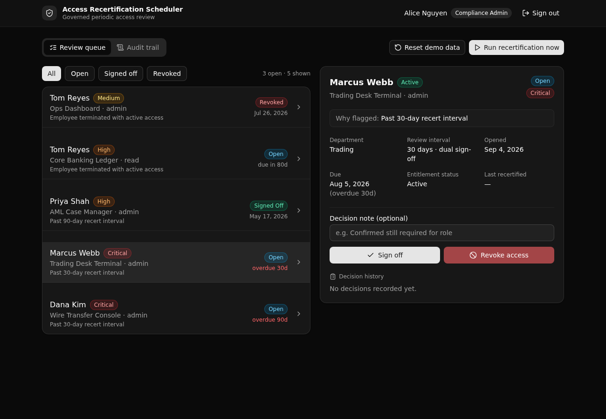

Recertify access on a schedule,
with every decision logged.
A governed Xano backend for periodic access recertification. A scheduled scan flags entitlements past their risk based review interval, opens role guarded review items, and writes every sign off and revocation to an audit trail a regulator can read.

What it demonstrates
Risk tiered policy
One policy row per tier sets the review interval. The scan reads the table, so cadence is data, not code.
A real review workflow
An overdue grant opens a review that a reviewer signs off (stamping it recertified) or revokes. An actioned review cannot be actioned again.
API layer RBAC
A native auth table plus per endpoint role preconditions. A viewer cannot act, a non admin cannot run the scan. Access is enforced at the API layer, not with row level rules.
Scheduled and idempotent
A daily task and a run now endpoint call the same scan function, so both enforce identical policy. Running it twice never opens duplicate reviews.
Append only audit
Every decision writes one immutable row: who acted, what changed, and when. The read only viewer role can audit but not act.
One typed contract
The React frontend derives every request path and type from the backend query defs. Change a def and the client follows at compile time.
API surface
| Method | Path | Enforces |
|---|---|---|
| POST | recert/seed | Open. Resets the demo dataset. |
| POST | recert/auth/login | Valid credentials only, mints a token. |
| GET | recert/me | The authenticated user and role. |
| POST | recert/runs/execute | Compliance admin only. Runs the scan now. |
| GET | recert/reviews | Reviewer or above. Lists reviews by status. |
| GET | recert/reviews/{id} | Reviewer or above. One review in full context. |
| POST | recert/reviews/{id}/signoff | Reviewer or above. Recertify, once per review. |
| POST | recert/reviews/{id}/revoke | Reviewer or above. Revoke access, once per review. |
| GET | recert/audit | Viewer or above. The append only decision log. |
Four screens
Sign in
Pick a seeded user to see the role gated UI. One click loads the demo data on a fresh deploy.
Review queue
Flagged entitlements with the rule that fired, the risk tier, and the due date. Admins run the scan here.
Review detail
The full governed context for one item, with sign off and revoke actions gated to reviewers.
Audit trail
Every decision, newest first, with who acted and why. The screen a regulator could read.
Use this template
Clone the repo and stand up your own live copy on Xano. Paste this to a coding agent, or run the commands yourself.
Clone https://github.com/xano-scratch/access-recertification-scheduler
and deploy it to my Xano instance:
npm install
npx xanots login
npm run xano:deploy
Then open the printed URL, click "Load demo data", and sign in
as alice@bank.example (password recert-demo).
Any hosted demo links are ephemeral and expire within hours. The durable artifact is this repo:
run npm run xano:deploy for a fresh live instance and URL whenever you need one.